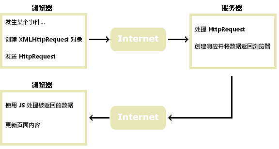

Ajax简单探秘
2018年1月13日
概念
Ajax 是一种在无需重新加载整个网页的情况下，能够更新部分网页的技术。
通过在后台与服务器进行少量数据交换，使网页实现异步更新。这意味着可以在不重载整个页面的情况下，对网页的某些部分进行更新。
原理
Ajax技术的核心是XMLHttpRequest（简称XHR）,它是在IE5中首先引入的，是一种支持异步请求的技术。简单来说，ajax的原理是通过XmlHttpRequest对象来向服务器发异步请求,从服务器获得数据，然后用javascript来操作DOM而更新页面。

Ajax的工作过程
Ajax的使用
源生JavaScript中:
function CreateXmlHttp() {
//非IE浏览器创建XmlHttpRequest对象
if (window.XmlHttpRequest) {
var xmlhttp = new XmlHttpRequest();
}
//IE浏览器创建XmlHttpRequest对象
if (window.ActiveXObject) {
try {
xmlhttp = new ActiveXObject("Microsoft.XMLHTTP");
}
catch (e) {
try {
xmlhttp = new ActiveXObject("msxml2.XMLHTTP");
}
catch (ex) { }
}
}
return xmlhttp;
}
var xhr = CreateXmlHttp() ;
var data = document.getElementById("username").value;
if (!xhr) {
alert("创建xhr对象异常！");
return false;
}
xhr.open("POST", url, false); //提交方式为post
xhr.onreadystatechange = function () {
if (xhr.readyState == 4) {
document.getElementById(“user1”).innerHTML = “数据正在加载…”;
if (xhr.status == 200) {
document.write(xhr.responseText);
}
}
}
xhr.send();
JQuery中:
$.ajax({
type: "get", //提交方式为get
url: "demo.php",
beforeSend: function(xhr){
//ShowLoading();
},
success: function(result,status,xhr){
$("div").html(result);
},
complete: function(xhr, textStatus){
alert("请求完成");//HideLoading();
},
error: function(){
alert("请求发生错误");//请求出错处理
}
});
标签：